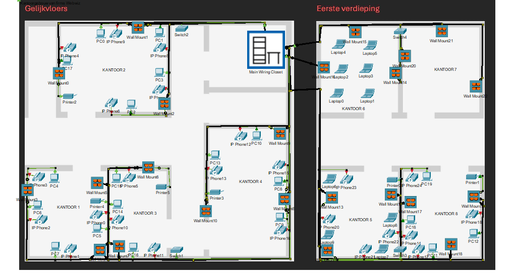

Cisco Packet Tracer
In dit project werd een gestructureerd netwerk voor Webwiz ontworpen met correcte bekabeling, racks en switchen. Daarnaast werden een bekabelingsplan, rack layout en patchplan uitgewerkt.

Beschrijving
In dit project heb ik een volledig Cisco Packet Tracer bestad=nd gemaakt aan de hand van de gegeven benodigdheden. Ook kwam er een aankooplijst aan te pas, zo wist het bedrijf hoeveel alles kost en wat hij/zij allemaal nodig heeft voor het netwerkbedrijf.
Wat heb ik geleerd?
- Werken met gestructureerde netwerkbekabeling
- Een netwerk ontwerpen in Cisco Packet Tracer
- Racks, switchen en patchpanelen correct organiseren